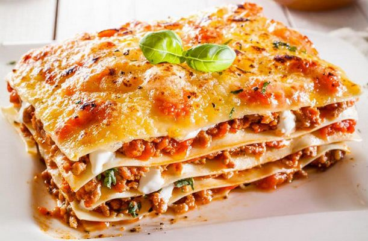

1. Капрезе (Сaprese). Салат в патріотичних кольорах, який символізує прапор Італії. Був названий в честь відомого острова Капрі, тому, думаю, не варто казати де його готують найсмачніше. Вважається одною з найпопулярніших страв країни. Ніжна моцарела та соковиті помідори, присипані пахучим базиліком та заправлені оливковою олією.
2. Фріттата (Frittata). Всього-на-всього італійська версія, такого відомого нам омлету. Є безліч варіантів приготування з додаванням різноманітних сирів, овочів, м’яса та спецій. Краще не додавати продукти, які містять рідину. Наприклад в Неаполі її готують з вчорашньої вечері (макарони, картопля), присипте готовий омлет петрушкою, і вуаля, смачний сніданок готовий.
3. Брускета (Bruschetta). Легкі закуски, з хліба “чіабата”, які подаються перед основним прийомом їжі. Це гарячі бутерброди, адже основа з хліба підсушена на грилі, натерта часником та оливковою олією. Мабуть тому в перекладі з італійської їхня назва “запікати на вугіллі”. Зверху ж можна експериментувати, викладаючи різноманітну кількість сиру, шинки, овочів, оливок. Найпопулярнішим рецептом вважаються “брускети з помідором та базиліком”.
4. Різото (Risotto). Рисова страва, одна з найпопулярніших в країні. Його готували ще в 19 ст. на Півночі Італії. Рис варять на бульйоні з додаванням м’яса, морепродуктів, овочів, фруктів. Варіацій багато, тому вирушайте до Італії, на пошуки найсмачнішого.
5. Лазанья (Lasagna). Надзвичайно смачна запіканка, з класичною начинкою (томатний соус, м’ясо, моцарела, пармезан та соус бешамель), родом з Емілія-Романья. Тому, якщо колись будете в Болоньї, обов’язково її там скуштуйте.

6. Паста (Pasta). Тут і описувати не потрібно, адже кожен знає, що Італія – це “тисячі страв з тіста” і основною, без якої не обходиться ні одне святкування є паста. Спагетті, фарфале, фузілі, пене, букатіні і ще десятки інших назв, які не запам’ятати. І звісно ж, які макарони без соковитого соусу та великої кількості варіацій начинок в різних регіонах країни.
7. Піца (Piza). Колишня страва бідняків, яка складалась з коржа та помідорів зі спеціями. Це зараз піца, одна з найпопулярніших страв Італії з різноманітними начинками. В Неаполі може налічуватись більше 20 видів рецептів. Тому саме на Півдні Італії піца вважається справжньою та найсмачнішою. Класична “Маргарита” – одна з найпопулярніших, як і “Капрезе”, виконана в національних кольорах прапора. Також популярний вид закритої піци “Кальцоне (Calzone)”, при її розкритті Ви зможете відчути цей чудовий аромат, який зберігається всередині.
8. Ньоккі (Gnocchi). Такі ненависні галушки з дитинства, але коли Ви скуштуєте їх в Італії, то зрозумієте, скільки втратили. Адже тут їх готують з манної крупи, кукурудзяного борошна, картоплі і на додачу заправляють надзвичайно смачними соусами. Тому гайда у Верону за порцією смачненького.
9. Тірамісу (Tiramisu). Відносно “молодий” десерт, але не менш популярний не тільки в Італії, а й у всьому світі. Бере свою історію з міста Сієна. Саме тут Ви зможете оцінити його справжній смак та зрозуміти істинний переклад назви “підійми мене нагору”. Ніжна кремова текстура в поєднанні з печивом до маленької чашечки еспресо – це саме те, чого бажаєш зранку.
10. Морозиво (Gelato). Ну і під кінець нашої статті, хочемо розповісти про найсмачніше, про десерти. Побувавши хоч раз в Італії, Ви мабуть пробували справжнє італійське морозиво, від різновиду якого в “Джелатерії” розбігаються очі. Ще в давні часи морозиво вважалось стравою аристократів, а рецепт був державною таємницею. Тому не зволікайте, а вирушайте в сонячну Італію і організуйте собі гастрономічний тур.